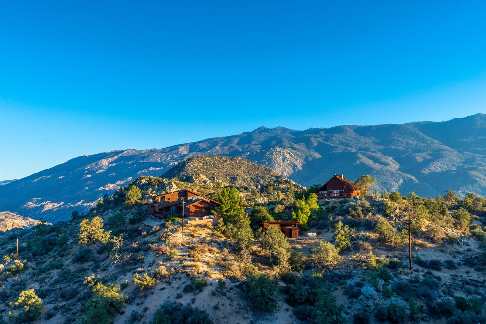
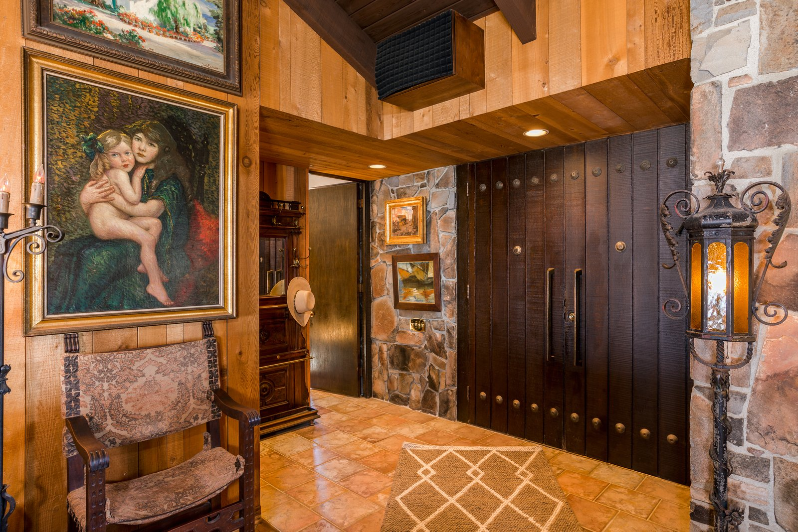
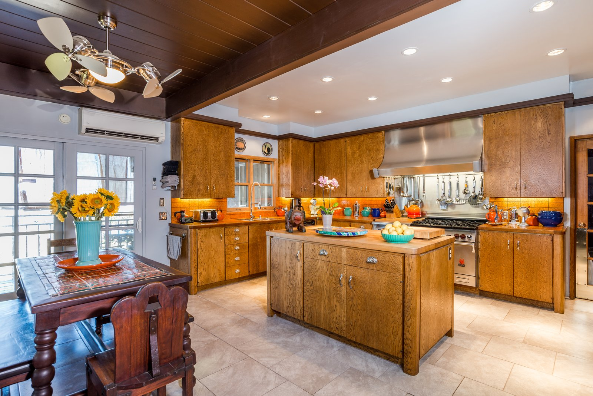
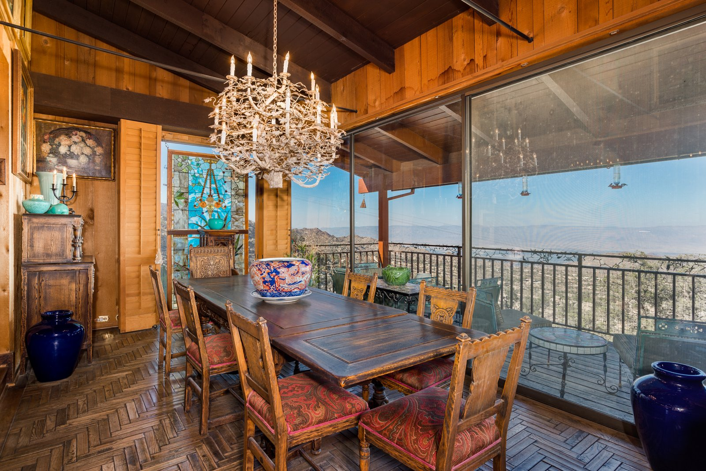
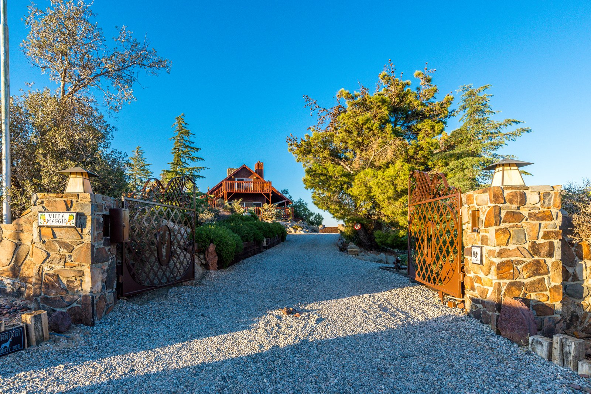
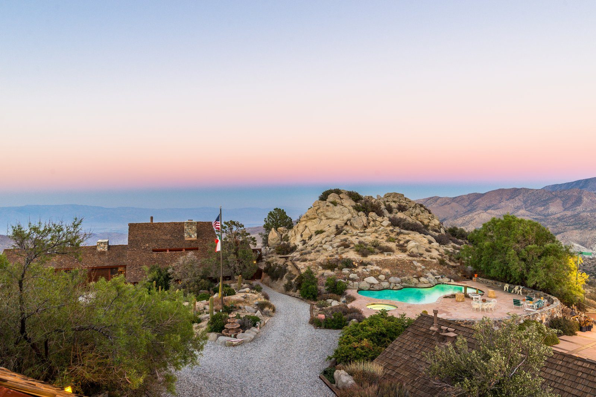

Frank Sinatra's secluded Palm Springs-area retreat Villa Maggio was one of the first celebrity-owned estates I wrote about, as well as one of the first occasions I got to work with Cristie St. James and Markus Canter of Berkshire Hathaway HomeServices California Properties.
Now, the approximately 6,428 square foot estate compound is back on the market, exclusively listed by Cristie and Markus. What follows is a blend of copy written by Markus and me.
Villa Maggio is the only residence that Sinatra was instrumental in designing and building for personal use. His vision was to create a private sanctuary where he could entertain the Rat Pack, visiting royalty, and global dignitaries with absolute discretion.

The property is set on around 7.5 acres at an elevation of roughly 4,300 feet, allowing for commanding views of Palm Springs and the Coachella Valley. The setting also provides a more temperate climate but it doesn't limit ease of access because, in true celebrity fashion, Sinatra had a helipad installed.
The name refers to a character that Sinatra won an Oscar for in From Here to Eternity. Villa Maggio preserves its original mid-century lodge style and stands as the last intact Sinatra property available for purchase, a piece of American cultural history.
This idea is strengthened by the fact that Sinatra personally selected many of the furnishings and fixtures. The owners have also been careful in preserving and stewarding the property.

There are many cool features but one of the more unique would have to be the secret passage between two of the guest house bedrooms. If the walls could talk, what stories would they tell?
Wide overhanging eaves add to the cool factor, as they provide shade and reduce the ecological footprint. The estate was ahead of its time in many respects, with locally sourced materials that ground it to the desert surroundings and make it a part of the scenic natural beauty.
Renovations have remained faithful to Sinatra's original vision, maintaining authentic charm while integrating modern comforts. Hardwood floors and vaulted ceilings with exposed beams give the home a relaxing atmosphere. This is combined with commercial grade appliances in the main home's two full kitchens.

Of course, it's the provenance and views that make the home so special, however. Entrancing, 360-degree views of the mountains, national monuments and city lights are displayed from a variety of living areas, including the tennis court, pool/spa, dining room, and numerous decks.

A gated drive ensures privacy, yet Palm Desert's luxury shopping and dining are only 20 minutes away and Palm Springs International is only 26 miles away as the crow (or helicopter) flies.

Each of the three bedroom suites in the guest house has a private view deck. The pool house features two saunas, a kitchenette and a large gathering space where Sinatra hosted his fellow icons and friends.

With its provenance, scale and amenities, which include an expansive motor court with space for 24 vehicles, Villa Maggio could appeal to collectors of historic estates, fine art and watches, aircrafts and classic cars. Whether acquired as a personal retreat or an addition to a portfolio of assets, Villa Maggio stands alone in significance and appeal.
Potential for additional structures to be built on the property (buyer to verify). Private sale or trade inquiries are invited.
If you have a cool $5 million and are interested in Villa Maggio, reach out to Cristie St. James or Markus Canter at info@stjamescanter.com.
For more pictures, videos and property information, visit the Villa Maggio listing. To find a home with similar qualities in Beverly Hills or Palm Springs, visit St. James + Canter.com.
Photos courtesy of St. James + Canter, Berkshire Hathaway HomeServices California Properties. Listing agents: Cristie St. James and Markus Canter.